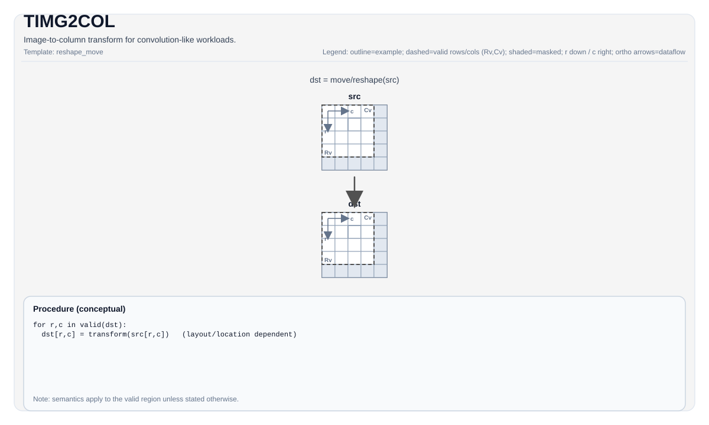

TIMG2COL¶
指令示意图¶

简介¶
TIMG2COL 把输入特征图 Tile 重排成卷积友好的列矩阵形式，是 PTO 里连接卷积样式输入布局与矩阵乘法路径的关键桥梁。
这条指令不只是简单提取窗口。它同时综合了：
- 输入特征图几何信息
- kernel 大小
- stride / dilation
- padding
- channel 打包方式
- 当前在逻辑 im2col 矩阵中的起始位置
posM / posK
数学语义¶
把卷积输入展开成矩阵时，可以把输出矩阵看成按 (m, k) 编址：
m选择输出空间位置k选择卷积核内的通道与空间偏移
TIMG2COL 会把源特征图中与 (posM, posK) 对应的卷积窗口元素，写到目标 Left Tile 中。若窗口越过输入边界，则写入 pad value。
CPU 模拟器里的显式计算逻辑是：
- 先根据
stride / dilation / filter / pad推出输出位置(outRow, outCol) - 再根据
kIndex推出(channelIndex, kernelH, kernelW) - 若映射回输入后的
(inputH, inputW)越界，则写padValue - 否则读取源特征图相应元素
汇编语法¶
PTO-AS 形式：参见 汇编写法与操作数。
AS Level 1（SSA）¶
%dst = pto.timg2col %src : !pto.tile<...> -> !pto.tile<...>AS Level 2（DPS）¶
pto.timg2col ins(%src : !pto.tile_buf<...>) outs(%dst : !pto.tile_buf<...>)C++ 内建接口¶
声明于 include/pto/common/pto_instr.hpp：
template <typename TileData, typename ConvTileData, SetFmatrixMode FmatrixMode = SetFmatrixMode::FMATRIX_A_MANUAL,
typename... WaitEvents>
PTO_INST RecordEvent TIMG2COL(TileData &dst, ConvTileData &src, uint16_t posM = 0, uint16_t posK = 0,
WaitEvents&... events);约束¶
约束
通用约束¶
src必须是卷积配置/特征图 Tile，位置类型为TileType::Mat。- 输入布局必须是
NC1HWC0或NDC1HWC0。 dst必须是TileType::Left。src与dst的元素类型必须一致。posM / posK不是像素坐标，而是逻辑 im2col 矩阵中的起始偏移。
A2/A3 实现¶
- 支持的数据类型是：
int8_t、half、bfloat16_t、float。 - A2/A3 的
Left目标约束是： dst.SFractal == SLayout::RowMajordst.isRowMajor == true- 当
FmatrixMode为FMATRIX_A_AUTO或FMATRIX_B_AUTO时，A2/A3 会自动根据src的： fmapH / fmapWpadList来设置 FMATRIX。- A2/A3 的
TIMG2COLauto 路径不会顺手设置 repeat 和 padding 寄存器；如果后续路径依赖这些状态，应显式使用对应的pto.set_img2col_rpt或pto.set_img2col_padding。
A5 实现¶
- 支持的数据类型更宽，除
int8_t/half/bfloat16_t/float外，还覆盖若干uint*/int*类型。 - A5 的
Left目标约束是： dst.SFractal == SLayout::RowMajordst.isRowMajor == false- 当
FmatrixMode为FMATRIX_A_AUTO或FMATRIX_B_AUTO时，A5 会自动根据src的： fmapH / fmapWpadListrepeatStride / repeatTime / repeatMode / dstStride / dstMpositionpadValue一并设置 FMATRIX、repeat 和 padding 状态。
CPU 模拟器¶
- CPU 使用显式公式直接完成 im2col 展开。
- CPU 目前沿用与 A5 相同的
Left目标布局约束： dst.SFractal == SLayout::RowMajordst.isRowMajor == false
这意味着 TIMG2COL 的 Left Tile 细节并不是所有目标完全一致，文档里必须按目标区分。
示例¶
#include <pto/pto-inst.hpp>
using namespace pto;
template <typename LeftTile, typename ConvTile>
void example(LeftTile& dst, ConvTile& src) {
TIMG2COL(dst, src, /*posM=*/0, /*posK=*/0);
}